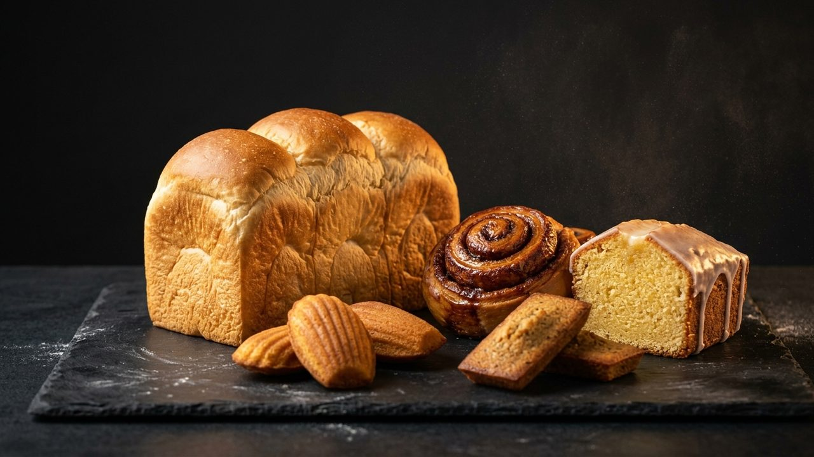

🍎 Apple 官網級深色毛玻璃介面
•
iPhone & iPad 觸控最佳化
精準掌控每一克奶油與麵粉。
Jasmine's 烘焙配方與成本中樞
同步連結 Jasmine's Recipe Google 試算表 四大核心分頁。自由輸入今日欲製作的麵包個數或份數，即時按比例換算奶油、麵粉等全部原料克數、烘焙百分比與單批毛利。
經典配方庫
5 款主力 + 波蘭種
建檔嚴選原料
59 項 9 大類別
最高毛利明星
瑪德蓮 64.9%
目前選中配方目標
生吐司 8 條 (1份)
STEP 1 — 選擇要製作的烘焙品項
點擊卡片立即切換配方基準
STEP 2 — 彈性調整製作份數與數量
1.00x 標準份量
生吐司 (RCP-01)
試算表基準：1 份可做 8 條 • 單批基準工時 0.83 小時
單位：條
試算表 1 份基準產量：8 條
單位：份 (倍)
公式：預計數量 ÷ 基準產量
滑動快速縮放份量
目前：8 條 (1.00 份)
快速選擇製作份數 / 數量：
🧈
核心麵粉與奶油乳脂即時克數（隨份數等比縮放）
🔄 依現有單一原料克數反推可做份數
例如冰箱只剩指定克數的無鹽奶油或麵粉，選擇該原料並輸入現有克數，即可自動反推可製作的麵包數量與其餘所有原料克數：
LIVE COST & PROFIT
本批生產成本與毛利即時核算
單位切換:
💡 試算表「肉桂捲 — 焦糖蘋果餡」檸檬成本智慧提示
原試算表中焦糖蘋果餡「檸檬汁 33g」對映至「檸檬皮 (NT$15/顆)」，使 33g 檸檬計為 NT$495。開啟右側開關可切換為「檸檬角/鮮榨檸檬汁 (NT$0.54/g)」檢視真實食材成本。
本批食材原料總成本
NT$511.4
單件分攤：NT$63.92
本批完整總成本 (含包材/人工/電)
NT$838.2
單件完整成本：NT$104.78
本批預估總營收
NT$1,920
單件目前售價：NT$240
本批預估毛利額 / 毛利率
+NT$1,081.8
預估毛利率：56.3%
| 成本結構項目 | 計算標準 | 本批總額 | 單件分攤 |
|---|
STEP 3 — 按比例換算原料克數清單
本批總重 4,426 g
各原料精準秤重表 （點擊每列可打勾確認已秤重）
廚房秤重進度：已完成 0 / 10 項原料
0%
🫧 隔夜低溫酵種「波蘭種 (RCP-06)」同步換算明細
目標需 520 g
生吐司配方中包含自製波蘭種。依您目前設定的份數，前一晚需準備的波蘭種內部原料克數如下：